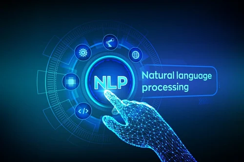

Personal Project
In this project I have perform RFM Analysis to understand customer behavior and segment them into VIP, Regular, Dormant, New, and Churned categories. RFM stands for recency, frequency, and monetary value, which are three key metrics that provide information about customer engagement, loyalty, and value to a business.


In my role as a junior Data Scientist within BCG X's Virtual Experience Program, I leveraged data to provide strategic guidance to our client - PowerCo, for customer retention. My tasks involved the entire data analysis lifecycle: I started by understanding the business context and framing hypotheses. Then, I delved into Exploratory Data Analysis to uncover insights. Next, through Feature Engineering and Modeling, I developed predictive models to identify factors influencing customer retention. Finally, I synthesized my findings into actionable recommendations that PowerCo can implement to enhance their customer retention strategies.

Contributed in 3 out of 7 Global IT Services Analytics Projects. I harnessed Microsoft Power BI, Power Automate, Python, and SQL, extracting & maintaining data piplines from diverse data sources including Azure HDInsight Hive DB, SQL DB, ServiceNow, Chime, SharePoint & crafted interactive PowerBI Dashboard. Insights-driven Analytics Dashboard empowered IT Services Leadership by revealing service bottlenecks, enabling targeted resource allocation, and predicting maintenance needs. This led to enhanced operational efficiency, cost savings, and improved user experiences, contributing to better business continuity and strategic decision-making.

Built a Machine Learning Model for the Customer Segmentation using PyCaret. PyCaret, a powerful Python library for automated machine learning. With PyCaret, I streamlined and accelerated the machine learning process, saving time and effort.

Implemented NLP techniques and Naïve Bayes algorithm to develop an Email Classifier that significantly supported Finance AP Leadership in enhancing Vendor Management and driving Process Improvement initiatives.